“When there’s an elephant in the room, introduce him.”
A personal history of making, detours, and showing up.
ORIGIN
STORY.
Before the titles, portfolios, and opening days, there was a kid from Houma who liked comic books, computers, music, photography, and games.
The early chapters 01—29
The things that made the maker.
The details evolved, but the pattern held: stories, technology, performance, art, and an irresistible urge to make something. These chapters keep their original order—and the quotes that helped frame them.
Kyle Prestenback
Every path has a beginning. Mine starts in Houma, Louisiana.
“It’s not about how to achieve your dreams, it’s about how to lead your life…”
About Me
- Brother — Identical Twin
- Mother — Elementary School Teacher
- Father — Oil Field Electrician
- Dog — French
- Myers-Briggs Type: INFP
- Favorite Word: Pizza
- Home Town: Houma, LA
- Visited 46 of 50 States & 9 Foreign Countries
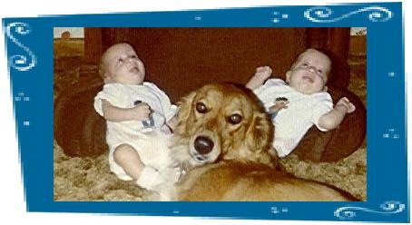
“There are a few key moments in anyone’s life. A person is fortunate if he can tell in hindsight when they happened.”
My Lovely Wife
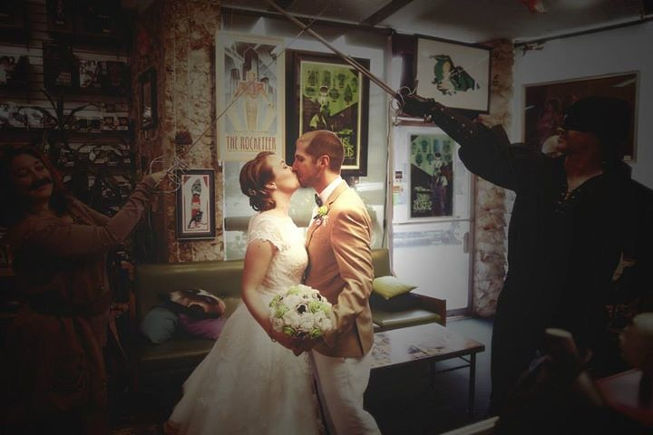
Heather became my partner in the adventure—and, later, the center of a family that keeps every success in perspective.
“Whether you think you can or can’t, you’re right.”
Our Pastimes
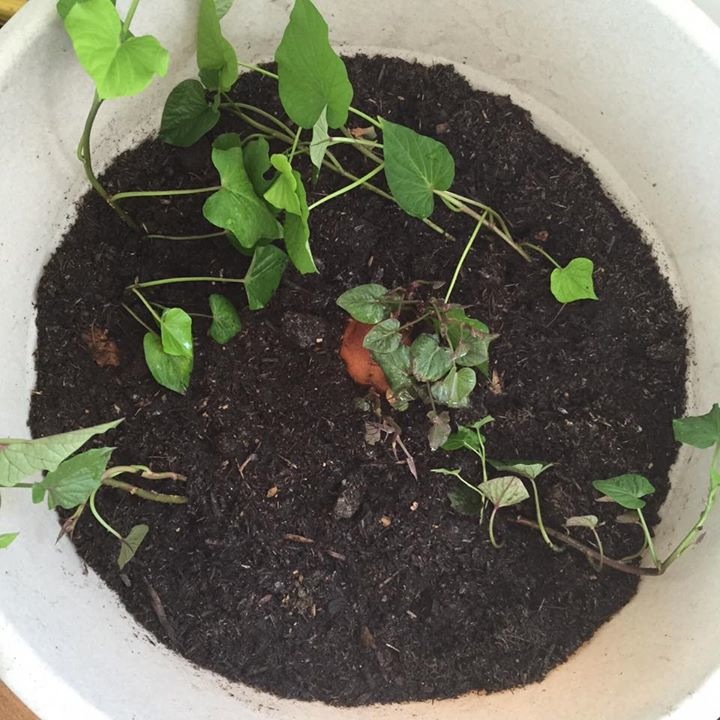
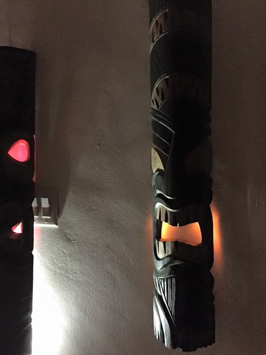
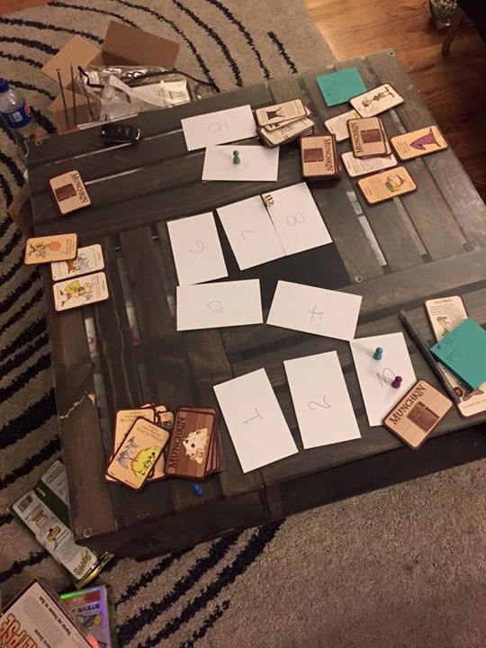
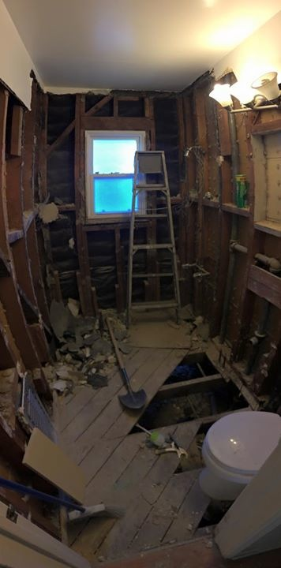
“If you’re going to have childhood dreams, you should have great parents who let you pursue them and express your creativity.”
5 Things that Defined my Youth
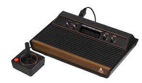
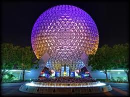
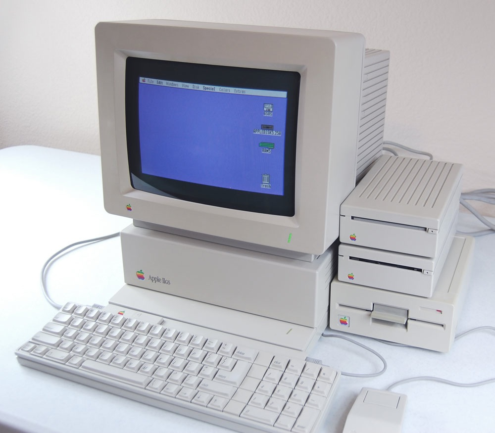
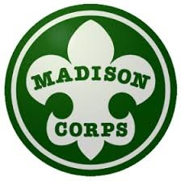
Different worlds, one through-line: I wanted to understand how the experience worked—and then try building one.
“Give yourself permission to dream.”
Virtual reality is cool
Imagineering Labs
Disney Vision / 1993
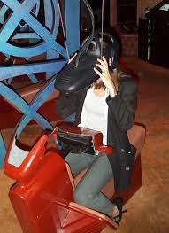
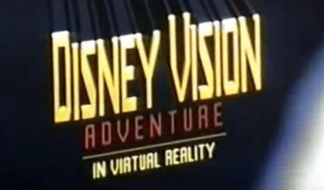
“Be good at something. It makes you valuable. Have something to bring to the table, because that will make you more welcome.”
Undergrad
I studied
- Computer Science
- Photography
- Digital Media
- Music
And on the side, I made video games.
“The brick walls are there for a reason. The brick walls are not there to keep us out.
The brick walls are there to give us a chance to show how badly we want something.
Because the brick walls are there to stop the people who don’t want it badly enough. They’re there to stop the other people.”
These are Not Pictures of Me
These pictures are of my identical twin brother—not me. The resemblance has caused some understandable confusion.
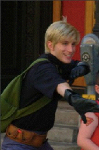
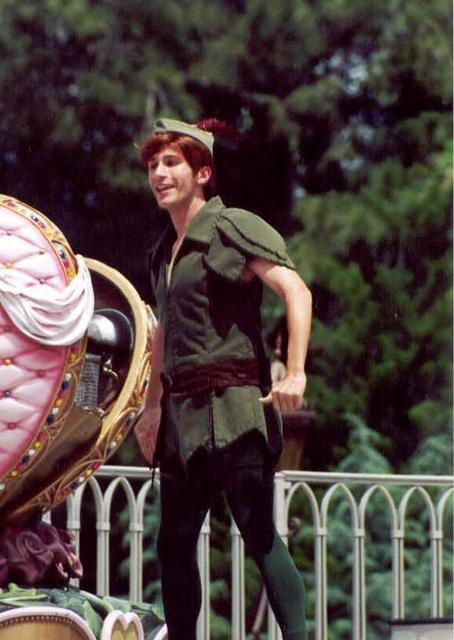
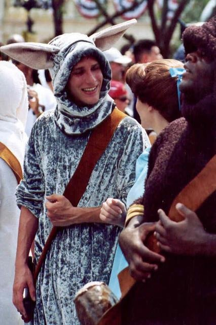
“We cannot change the cards we are dealt, just how we play the hand.”
I Got A Real Job
A first lesson in bringing technical ideas into a real organization, with real teams and real constraints.
“Luck is indeed where preparation meets opportunity.”
Graduate School
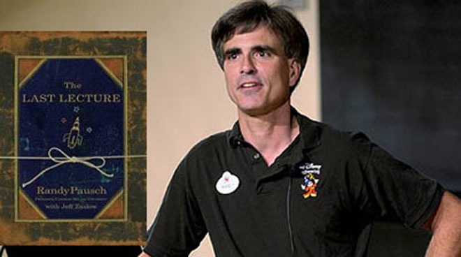
At the Entertainment Technology Center, creative ambition became a team sport: build quickly, test honestly, and learn in public.
Building Virtual Worlds
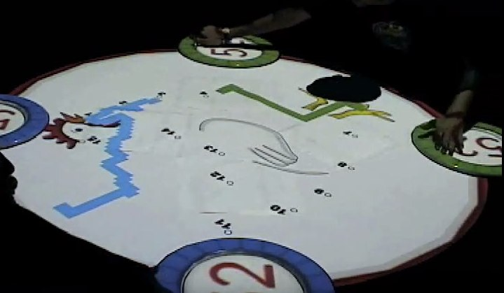
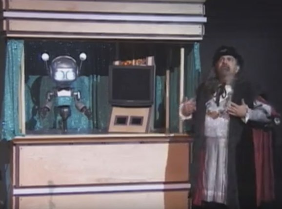
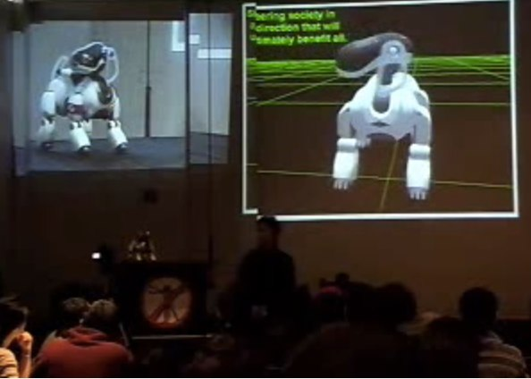
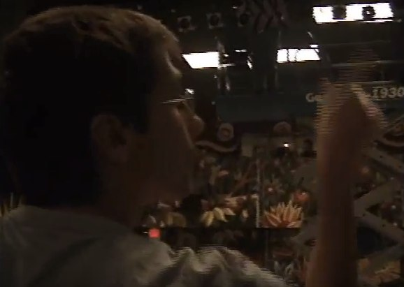
Give Kids the World Project
The Big Surprise
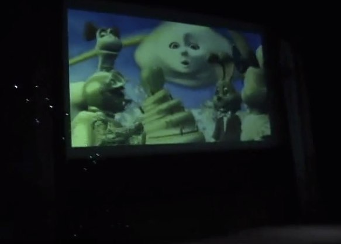
A defining reminder that technology matters most when it creates delight, agency, and a memory worth keeping.
“It’s important to have specific dreams. Dream big. Dream without fear.”
Early Disney Career
New Technology
Digital Menu Boards
PhotoPass — Disney Photo Movie
Buena Vista Games Creative Think Tank
High School Musical — Wii
Unreleased Disneyland Adventure Game
Rapid Prototyping
Disney R&D
Adventures by Disney
Living Characters Initiative
Studio Technology — Side loading / Blu-ray
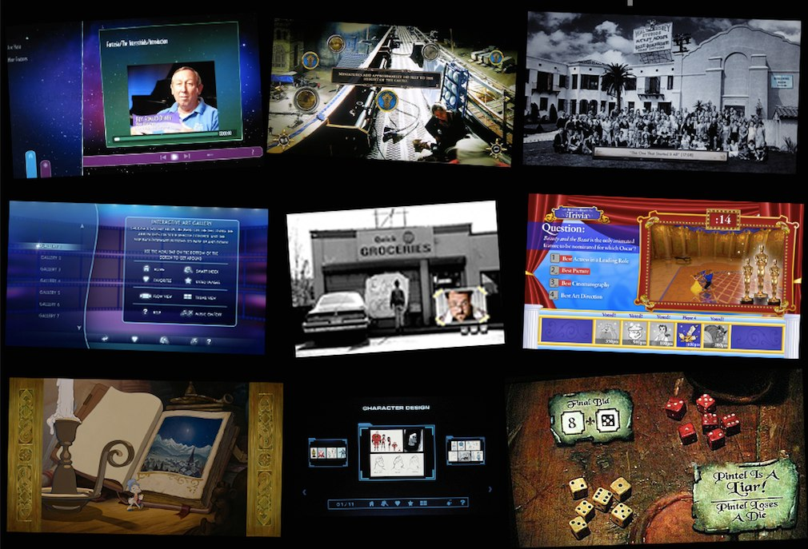
“Experience is what you get when you didn’t get what you wanted.”
Walt Disney Studios Home Entertainment
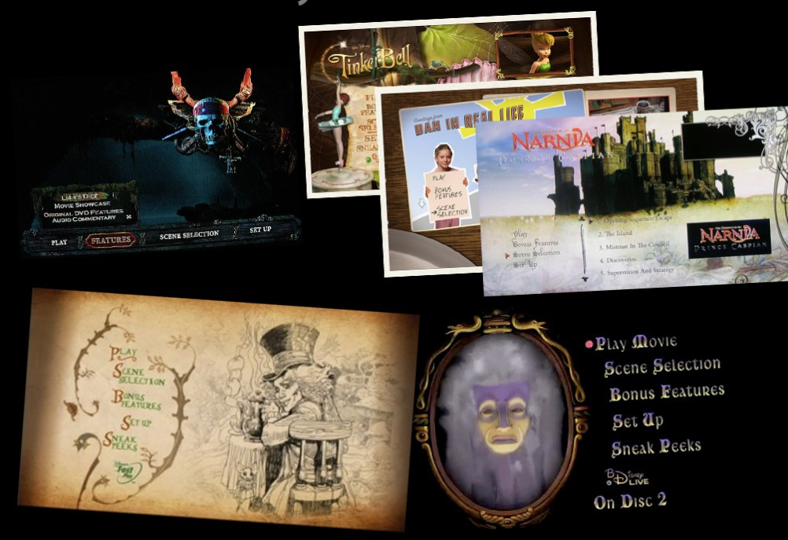
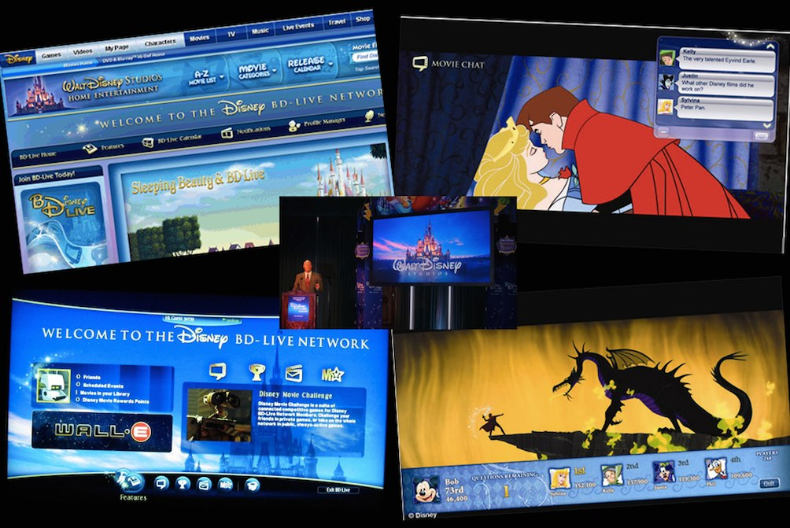
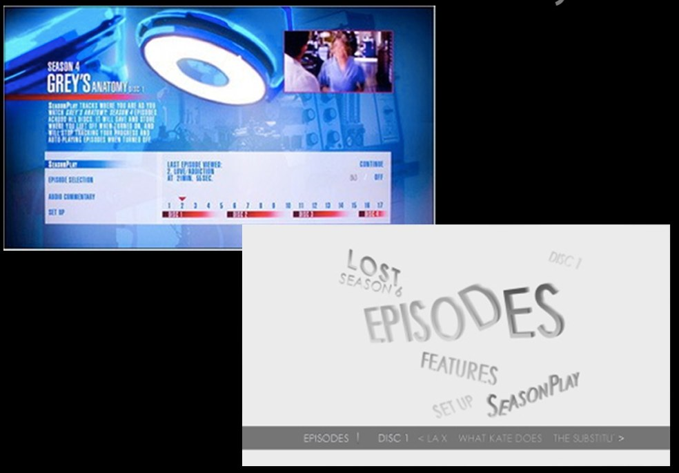
“No job is beneath you.
You ought to be thrilled you got a job in the mailroom. And when you get there, here’s what you do:
Be really great at sorting mail.”
R&D → Show Software Interactive Portfolio Leader → Technical Direction
WDI
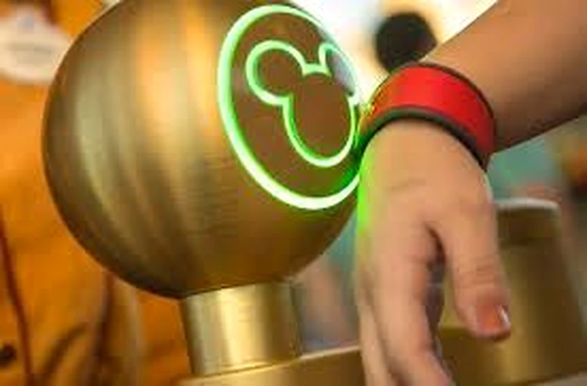
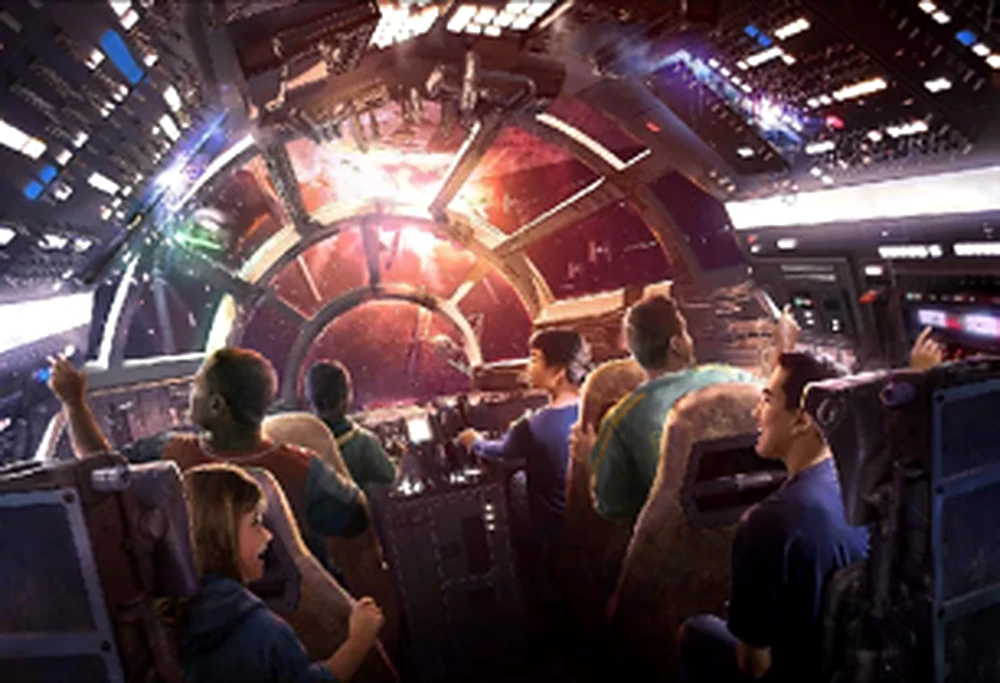
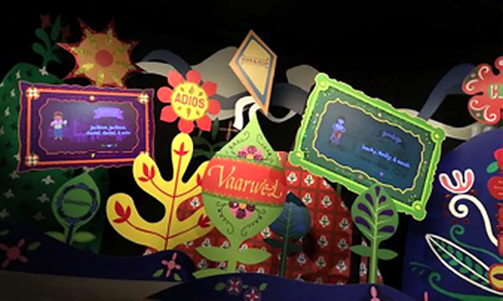
“If you lead your life the right way, the karma will take care of itself. The dreams will come to you.”— Randy Pausch
Still becoming ∞
The story is still under construction.
The work keeps changing. The through-line does not: stay curious, make the difficult thing clearer, help the team move, and build something that holds up when people finally step inside it.
Elsewhere Links